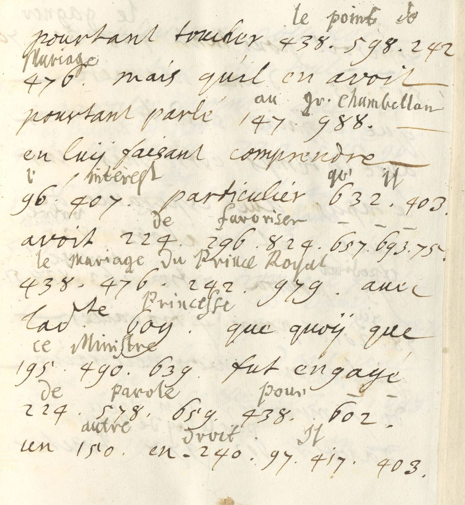
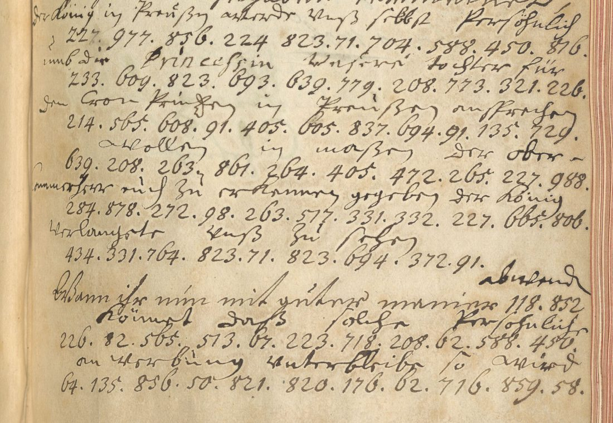

: Workshop of Sir Godfrey Kneller, after the portrait of 1714. Wikimedia Commons, public domain.")
At a glanceRead from existing decipherment · 485 of 492 code groups
- The letters
- Johann Ernst von Hattorf (Hanover, 7 November 1697 and 31 January 1706), Johann Wilhelm von Heusch (Berlin, 10 October 1705) and Elector Georg Ludwig (Hanover, 25 May 1706) to Jobst Hermann von Ilten, the Hanoverian minister, in 1706 envoy extraordinary at Berlin.
- Where
- Gottfried Wilhelm Leibniz Bibliothek, Hanover, Ms XXIII 1245:4 ff. 212–213 and 1245:7 ff. 201–204, 288–289, 329–330, all online in the GWLB digital library. Kalliope notes each one as “Dechiffrierter Brief”.
- The cipher
- Two numeric syllabic codes with homophones and nulls: code A in 1697, and code B in 1705–06, used for French and German alike.
- How it was checked
- The office wrote the plain text over every code run. It was transcribed here, and every group was checked against its other occurrences. No gloss contradicts another.
- What it says
- In 1697 the Elector wants discord sown between Kolbe and Barfus at Berlin. In 1705–06 the letters work towards the marriage of his daughter Sophia Dorothea to the Prussian Crown Prince, through the Ober-Cammerherr Kolbe von Wartenberg.
- Still open
- Seven groups the interliner left without a gloss, none of them needed for the sense.

01 What the catalogue said, and what the record says
The project’s scan of 23 September 2026 listed six items in the Ilten papers at the GWLB as “not deciphered”. The Kalliope records say the opposite. The four letters of 1697–1706 are each noted Dechiffrierter Brief, a deciphered letter, and the two of 1743 Teilweise dechiffrierter Brief. The scan also said the images were not online. They are: the GWLB’s Kitodo library has the Receuil de Lettres a Jobst Hermann d’Ilten, parts I–IV, VII and VIII, in public-domain colour scans. Its search form has to be submitted as a POST with the page’s own token, and a plain search URL returns nothing, which is probably why the scan missed them.
The two 1743 letters, to Johann Georg von Ilten, turned out to be something else: one of them carries no decipherment, and none was found elsewhere in the papers. They have their own write-up.
Kalliope gives “Herzog Georg Wilhelm” as the sender of the letter of 25 May 1706. The letter is signed Georg Ludwig Churfürst and countersigned by Hattorf, and Kalliope’s own creator field names Georg I.
02 The codes
- Code A (1697, groups up to about 505): a small syllabary. Examples are 445.71 ses, 124.73 affaires, 331.107.484 mettre, 75.256.505 Barfus and 500.505 vous. It has homophones (et is 237 or 238) and a null, 62, which opens la discorde and de l’un des and closes aisée.
- Code B (1705–06, groups up to 1010): one code for Heusch, Hattorf and the Elector, in French and in German. The same group keeps its meaning across languages: 977 is Roy de Prusse and König in Preußen, 988 Gr. Chambellan and Ober-Cammerherr, and 609 Princesse and Princessin. 665 is Roy or König, 476 mariage and 224 de, and 405.709.543 spells in-si-nu- in insinuer, n’insinuiés and insinuationes. Group 91 is a null: it sits inside per-son-[91]-ne and de-man-[91]-der.

03 The letters
Transcribed from the scans. Words in code are in italics, as the interliner deciphered them. The spelling is kept.
Hattorf to Ilten, Hanover, 7 November 1697
S. A. E. en signant la depeche… me dit, qu’il luy estoit venu une pensée dont je devois vous informer, qu’il seroit avantageux à ses affaires si l’on pouvoit mettre la discorde entre Colbe et Barfus et gagner l’amitié de l’un des deux. S. A. E. veut croire que vous puissiez faire cela par le moyen de la femme du premier avec laquelle on luy a dit que vous estes extremement bien. Je ne tiens pour mon particulier l’affaire aussy aisée…
“Colbe” is Johann Kasimir Kolbe, later Count Wartenberg, and Barfus is Field Marshal Johann Albrecht von Barfus, both leading men at the Berlin court in 1697. The “femme du premier” is therefore Kolbe’s wife.
Heusch to Ilten, Berlin, 10 October 1705
The chamberlain Count Wartensleben, back from Hanover, had Heusch told, par Monsr. de Berlips “pour mieux cacher nostre commerce”, that he had set out the Elector’s good intentions to the King. He had also spoken well of Madame la Princesse, fille de S.A.El., without touching on le point de Mariage. He had raised it with the Grand Chamberlain instead, ce Ministre, who was committed de parole to another match but might be won over. Neither Madame de Bulow nor Mademoiselle de Pelnitz must appear to have a hand in it, and it can succeed only par le Canal du Gr. Chambellan.
Hattorf to Ilten, Hanover, 31 January 1706
Ilten’s two letters reached the Elector en ses mains propres, seen by no one but Hattorf. When the mariage is raised with him again in Berlin, Ilten is to let it be understood que vous n’en estes pas instruit, since it is not la coutume d’offrir aussi bientost les Princesses de cette maison. There is a clear postscript on Goertz’s rheumatism, Eltz’s mission to Mainz and Trier, the Lübeck see, and the fear that Charles XII might march out of Poland.
The Elector to Ilten, Hanover, 25 May 1706

…daß ihr Ursache zu glauben zu haben vermeinet, der König in Preußen würde sich selbst persöhnlich umb die Princessin unsere Tochter für den Cron Printzen in Preußen ansprechen wollen, in maßen der Ober-Cammerherr euch zu erkennen gegeben… Wann ihr nun mit guter maniere abwenden könnet, daß solche persöhnliche anwerbung unterbliebe, so wird es Uns sehr lieb seyn…
The Elector expects the King to come in person to ask for his daughter’s hand. Ilten is to prevent the visit discreetly, “bloss als für euch”, by insinuations to the Ober-Cammerherr alone. Sophia Dorothea married the Crown Prince Frederick William on 28 November 1706.
04 Method and check
The four letters were fetched from the GWLB METS files. The clear text, the 492 code groups and the glosses were transcribed from crops of the master images, and a table was built of every group with every gloss it carries. Where a group recurs it carries the same value, in French and German alike, and nothing contradicts. That consistency is the check. It also separates code A from code B and shows the nulls 62 and 91. No key sheet for either code is known, and none was rebuilt: the glosses already give the reading.
05 What remains open
- Heusch 1705, f. 201v: group 419 after à, with 463 written above it and no gloss. The sentence reads without it.
- Hattorf 1706: 709.276 before juger, 78? before trouve, 626 after choque, and 728.36? after on. These six groups carry no gloss. Code B has no key, so they stay open.
- Several groups at the right margin run into the binding. Their glosses are legible, so the reading does not depend on them.
06 Sources
- GWLB digital library, Receuil de Lettres a Jobst Hermann d’Ilten: Part IV (Ms XXIII 1245:4, METS DE-611-BF-85418, images 433–436) and Part VII (Ms XXIII 1245:7, METS DE-611-BF-85421, images 405–412, 579–582, 661–664), digitale-sammlungen.gwlb.de, public domain.
- Kalliope records DE-611-HS-4135390, 4136135, 4136176 and 4136197, kalliope-verbund.info.
Transcriptions, the group table and the profile are in ilten1697/.